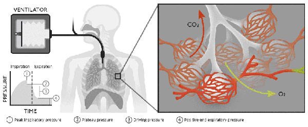

O espelho do VCV. Agora você promete a pressão — e aceita o volume que vier. O volume preenche por uma exponencial governada por τ = R·C, e cai sem avisar quando o pulmão piora. O que é garantido nunca soa o alarme. Para a Dani.

"Este é o paciente." A pressão está estável — e é justamente por isso que ninguém percebeu.
Mulher, 60 anos (165 cm), SDRA. Intubada, em PCV: Pinsp 12 acima de PEEP 8 (pressão de pico 20), Ti 1,0 s. No início, complacência ~30 mL/cmH₂O → VC ~350 mL (≈6 mL/kg). Bem ajustada, a equipe segue adiante.
O pulmão piorou — a complacência caiu. Como a pressão é garantida, a máquina manteve os mesmos 20 cmH₂O; quem caiu, silenciosamente, foi o volume: de 350 para ~215 mL. O monitor de pressão não mudou nada. A gasometria mostra hipercapnia. Abra o Laboratório (com esta paciente) e veja.
A pressão está exatamente onde você programou. Está tudo bem? O que vinha sendo vigiado — e o que você faz agora? Decida antes de revelar.
"A pressão está estável, a paciente está protegida." Confiou-se na garantia de pressão e ninguém vigiou o volume exalado nem a ventilação-minuto. Mas em PCV o volume é a variável livre: a complacência caindo derrubou o VC e a ventilação alveolar, e a hipercapnia avançou silenciosamente — sem que o monitor de pressão piscasse. O espelho do barotrauma do VCV: lá a pressão subia sozinha; aqui o volume cai sozinho.
Configurou-se alarme de baixo volume corrente e de baixa ventilação-minuto (a variável livre), investigou-se e tratou-se a causa da queda de complacência, e ajustou-se o Pinsp com cautela (vigiando para não recriar volutrauma ou hiperdistensão). Em PCV a pressão é garantida — por isso o volume é responsabilidade sua de vigiar.
Seis perguntas para entender o contrato espelhado do PCV — e a constante de tempo que governa o volume.
O espelho do Módulo 5. Lá, o mesmo volume e fluxo geravam três pressões. Aqui você entrega a mesma pressão a três pulmões — a pressão é idêntica, mas cada um devolve um volume diferente. E o fluxo que zera (ou não) conta por quê.
A pressão é sua promessa; o volume é a resposta. Veja o enchimento exponencial e leia o Ti contra o τ. Carregado com a paciente do caso SDRA · complacência caída
VC × Ti — a exponencial satura: passado ~3τ, mais tempo quase não dá mais volume
Honestidade do modelo: compartimento único, R e C constantes; VC = Pinsp·C·(1−e−Ti/τ). A subida (rise) é modelada apenas como rampa visual da pressão (não altera o VC de forma fechada). A pausa revela o platô alveolar = PEEP + VC/C, que é menor que o pico quando o Ti não permitiu equilibrar — o alvéolo "não viu" toda a pressão ajustada. VC/kg usa peso predito ≈ 57 kg (mulher, 165 cm). Números são estimativas didáticas.
Cinco questões sobre o que o PCV garante — e o que você precisa vigiar em troca.